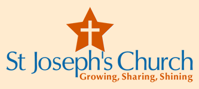

Chord Organ Volunteer Singers / Musicians
Posted 24-March-15
Our Parish Priest, Fr Mick Peters, is trying to development and foster a community for our 6 PM Vigil Mass at St Josephs on the Strand.
I'm helping by organising an event format, where I invite our members to bring a plate for a buffet and I provide music, or friends who can sing or perform. Now that we are achieving some success, we need more people who can sing or play music.
I'm open to any kind of singing or performing so long as it is not too controversial. My preference would be for an artist to sing a medley of old time favorites. Mass starts at 6pm and finishes about 10 to 7.
If you would like to take part, please call Merle Trembath 0418882633 anytime